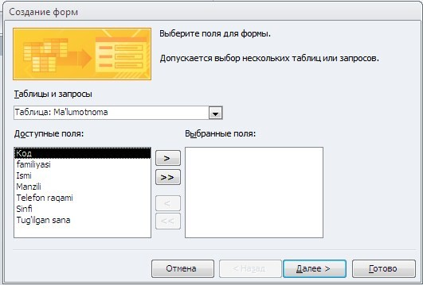
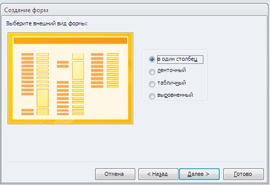
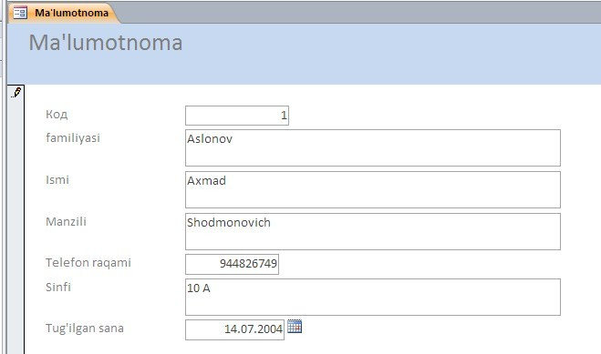
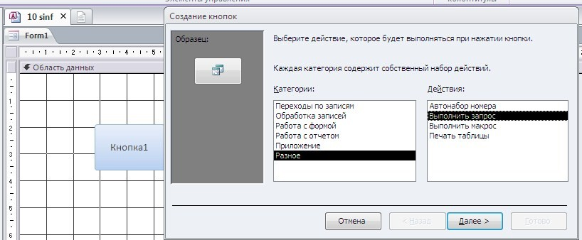
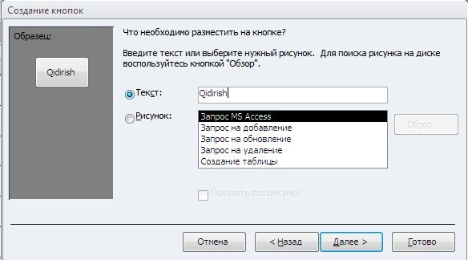
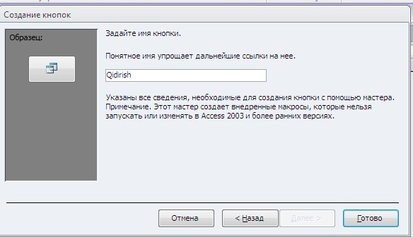
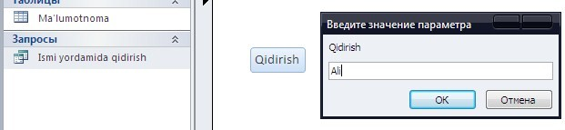
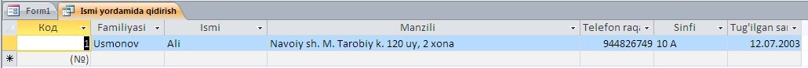
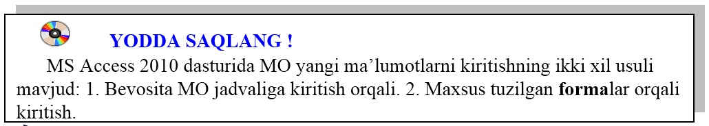

30-DARS. MS ACCESS 2010 DA MA’LUMOTLAR OMBORINI HOSIL QILISH VA TAHRIRLASHDA FORMALARDAN FOYDALANISH
Formalar MO yangi ma’lumotlarni kiritish va mavjud ma’lumotlarni ko‘rib chiqish uchun ishlatiladi.
Forma ma’lumotlarni kiritish uchun mo‘ljallangan maydonlari bo‘lgan elektron blank ko‘rinishiga ega. Bu maydonlarga kiritilgan ma’lumotlar bevosita MOning jadvaliga qo‘shiladi.
Umuman olganda, forma hosil qilinmasdan ham ma’lumotlarni asosiy jadvalga kiritish mumkin. Lekin jadvalga ma’lumotlarni forma orqali kiritish ancha qulaylik tug‘diradi. Jadvalga ma’lumotlarni kiritish uchun turlicha forma tuziladi.
MS Access 2010 da MO yangi ma’lumotlarni kiritishning ikki xil usuli mavjud:
• bevosita MO jadvaliga kiritish;
• maxsus tuzilgan formalar orqali kiritish.
1-mashq. O‘quvchilar haqidagi ma’lumotlar ombori uchun forma yarating va forma yordamida ma’lumotlarni kiriting.

Bajarish:
• “Ma’lumotnoma” nomli jadval yaratiladi va u belgilab, Создание menyusidan Мастер форм bandi tanlanadi;
• hosil bo‘lgan oynadan “>>” belgini tanlab, Далее tugmasi orqali navbatdagi oynaga o‘tamiz;
• oynada forma oynasini to‘rt xil ko‘rinishga o‘tkazish imkoni mavjud:

• в один столбец ( bir ustun);
• летночный (lenta simon);
• табличный (jadvalli);
• выровненный (to‘g‘irlangan).
Ushbu oynadan в один столбец bandi belgilanib, Далее tugmasini tanlaymiz;
navbatdagi oynadan Открыть форму для просмотра и ввода данных bandi tanlanadi;
Готов tugmasini bosamiz.
Natijada quyidagi oyna hosil bo‘ladi:

Hosil bo‘lgan forma oynasi yordamida “Ma’lumotnoma” nomli jadvalga m’alumotlarni kiritish imkoni mavjud.
2-mashq. 29-darsda berilgan o‘quvchilar haqidagi ma’lumotlarni forma orqali qidiring.
Bajarish:
• “Ismi yordamida qidirish” nomi bilan saqlangan jadvalni belgilaymiz va menyular satridan Конструктор форма bo‘limini tanlaymiz;
• Конструктор bo‘limidan Кнопкa buyrug‘ini tanlaymiz va uni forma oynasiga joylashtiramiz. Natijada quyidagi forma oynasi hosil bo‘ladi:

• hosil bo‘lgan birinchi oynadagi Разнос buyrug‘i tanlanib, ikkinchi oynadan Выполнить запрос buyrug‘ini belgilab, Далее tugmasini tanlaymiz;
• oynaning Текст qatoriga “Qidirish” jumlasi kiritiladi va Далее tugmasini tanlash yordamida navbatdagi oynaga o‘tiladi:

• oynadagi Понятное имя упращает дальнейшие ссылки на нее qatoriga “Qidirish” jumlasi kiritilib, Готов tugmasi tanlanadi:

Hosil bo‘lgan dasturni ishga tushirish uchun Режим bo‘limidan Режим формы bandi tanlanadi. Natijada yaratilgan dastur ishchi holatga o‘tadi. Oynadagi “Qidirish” tugmasini tanlash orqli jadvaldagi kerakli o‘quvchining ismi yordamida ushbu o‘quvchi haqidagi ma’lumotga ega bo‘lish mumkun:
Natijada quyidagi ko‘rinishdan Ushbu Ali ismli o‘quvchi to‘g‘risida ma’lumotlar ekranda aks etadi:

Agar forma oynasiga qo‘shimcha o‘zgartirish kiritish kerak bo‘lsa, uni Режим bo‘limidan Конструктор bandi tanlash orqali amalga oshirish mumkin.


1. MS Access 2010 da forma yaratish ketma-ketligini tushuntirib bering?
2. MS Access 2010 da MO yangi ma’lumotlarni kiritishning necha xil usuli mavjud? Forma oynasiga tugmalar qanday joylashtirish mumkin?
3. Мастер форм dan foydalanib forma yarating.
4. Yaratilgan forma oynasi orqali jadvalga ma’lumotlarni kiriting.

1. “Informatika va axborot texnologiyalari” faniga oid adabiyotlar, ularning mualliflari, yatilgan yillari haqida MOni yarating va so‘rov orqali MOdan tegishli ma’lumotlarni qidiring.
2. Jadvaldagi ma’lumotlarni forma orqali qog‘ozga chop etuvchi tugma yarating.